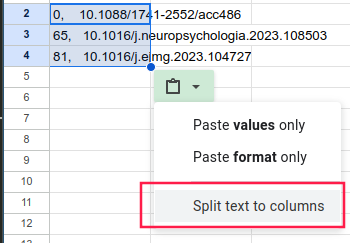

Enter a list of DOIs, one per line (ex copied from a Google/Excel sheet), and click the button to get the number of references for each DOI (according to crossref.org).
HOWTO: Import to Google Sheets

Copy-paste the results into a Google Sheet, click the special-paste dropdown > Split text to columns: